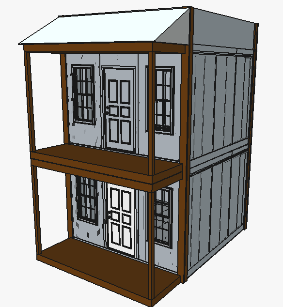

03 / VILLAGE CONSTRUCTION SET
A place to live.
A village to shape.
Twelve two-story cabins. One shared landscape. Build the plan with your tutor.
Loading the source cabin…
0 / 12 cabins
Feet · north ↑ · triangle = porch/frontDrag cabin to place · drag background to pan · scroll to zoom
Select a cabin to move or rotate it.
About the first library icon

Two-story campus cabin
Imported from the supplied VCS - Conceptual - Cabin 13x13.FCStd. The full model includes both stories; every placement reuses this geometry.
Layout checks
Clearance is your planning preference, not a building-code setback. This layout does not verify structures, stairs, accessible routes, fire access, terrain or utilities.